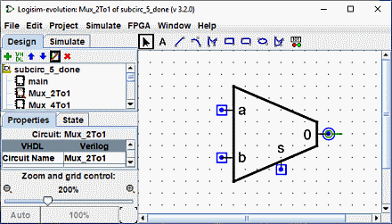
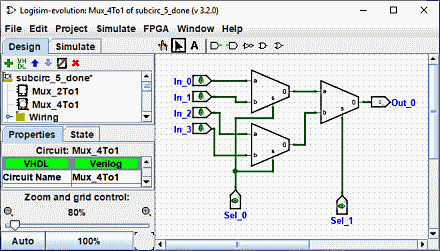

מראה מותאם אישית
מראה ברירת המחדל מאוד שמיש, ואכן לוגיסים התקיימה שנים רבות ללא אפשרות אחרת. אם,
עם זאת, אתה מעדיף שמעגל המשנה יצויר אחרת, אתה יכול לבחור | פרויקט |→| ערוך את מראה המעגל | , וכן
הממשק של Logisim יעבור מממשק עריכת פריסה רגיל לממשק לציור של
המראה של המעגל. אתה יכול גם ללחוץ על הסמל הקיצוני הימני ( ) ב-
סרגל הכלים העליון של חלונית הסייר.
) ב-
סרגל הכלים העליון של חלונית הסייר.
להלן, אנו עורכים את המראה של מרובה 2:1 כך שהוא מצויר
עם הטרפז הרגיל ולא עם מלבן.

כשהמראה של מרבבי ה-2:1 מצויר כמתואר לעיל, הפריסה של מרבב ה-4:1 תופיע אז בתור הבא.

עורך המראה הוא כמו תוכנית ציור מסורתית, אבל יש כמה סמלים מיוחדים לציון כיצד פועל הציור כאשר הוא ממוקם בפריסה של מעגל. אי אפשר להסיר את הסמלים המיוחדים האלה.
-
העיגול הירוק עם קו שיוצא ממנו, שנכנה אותו העוגן. (
 )
יש בדיוק עוגן אחד בכל הופעה של תת-מעגל. לכל רכיב במעגל יש יחיד
נקודה לזיהוי שלה
מקום; משתמש רואה זאת בעת יצירת רכיב חדש: לחיצת העכבר מזהה רק יחיד
מיקום, והרכיב ממוקם ביחס לזה (בדרך כלל עם הפלט הראשי אצל העכבר
מיקום) העוגן מזהה את מיקומו של העכבר ביחס לשרטוט הכולל
כאשר תת המעגל נוצר.
)
יש בדיוק עוגן אחד בכל הופעה של תת-מעגל. לכל רכיב במעגל יש יחיד
נקודה לזיהוי שלה
מקום; משתמש רואה זאת בעת יצירת רכיב חדש: לחיצת העכבר מזהה רק יחיד
מיקום, והרכיב ממוקם ביחס לזה (בדרך כלל עם הפלט הראשי אצל העכבר
מיקום) העוגן מזהה את מיקומו של העכבר ביחס לשרטוט הכולל
כאשר תת המעגל נוצר.
העוגן מזהה גם את פניו של המראה, כפי שמצוין בכיוון של העוגן נקודות קו מהמעגל שלו. בעת הצבת מעגל המשנה לפריסה, המשתמש יכול לשנות את פני תת-מעגל; פניו של העוגן מציינים לאיזה כיוון המראה מכוון. בדוגמה שלנו, העוגן פונה מזרחה, וכל מופע של תת-המעגל ב-Mux_4to1 פונה גם למזרח, כך שכולם מצוירים באותו כיוון כמו הופעת Mux_2to1.
-
העיגולים הכחולים (
 ) ו
ריבועים עם נקודות (
) ו
ריבועים עם נקודות ( ) ב
הם ה
) ב
הם היציאות
של תת-המעגל. יש בדיוק כמה יציאות שיש פיני קלט ופלט במעגל. יציאות המתאימות לכניסות מצוירות כריבועים, בעוד יציאות המתאימים לפלט מצוירים כמעגלים. כל יציאה מציינת כיצד חוט מתחבר לתוך המעגל יתאים לפין קלט או פלט בתוך הפריסה.
כאשר אתה בוחר יציאה, Logisim תציין את הסיכה המתאימה על ידי הצגת דיאגרמה מיניאטורית של פריסה בפינה הימנית התחתונה של החלון, כשהסיכה המתאימה מצוירת בכחול. זה לא קורה כאשר כל היציאות נבחרות.

אנו יכולים לשנות את הזום של התמונה באמצעות Ctrl+גלגל עכבר או באמצעות ההגדלה לחצני זכוכית או המחוון בפינה השמאלית התחתונה של סביבת העבודה. התעריף מוצג.
סרגל הכלים מכיל כלים להוספת צורות נוספות, כפי שמוצג להלן. כמה מקשים (Ctrl,Alt,Shift) יש השפעה על האופן שבו צורות מצוירות. ניתן לשלב מפתחות אלו אחד עם השני.
Ctrl: יישור נקודות הקצה ברשת.
Shift: כוון את הקווים בכפולת זווית של 45° או הפוך את הדמויות לסימטריות (ריבוע, ריבוע מעוגל, עיגול).
Alt: מצייר את הדמויות ממרכזן.
להלן מצגת קטנה של כל כלי

|
כלי בחירה : בחר, הזז, העתק, הדבק את הסמלים. |

|
כלי טקסט: הוסף, הוסף או ערוך טקסט. |

|
כלי קו : יוצר קטע קו. |

|
כלי עקומה: צור עקומת Bezier ריבועית. הקליק הראשון ו גרירה מציינת את תחילת השורה, הלחיצה השנייה וגרירה מסיימת את השורה וקובע את העקמומיות. לחיצה על השורה מראה לך שלוש נקודות הבקרה. Shift ולחץ על נקודת בקרה מרכזית כפה א עקומה סימטרית. Alt ולחיצה על נקודת המרכז מצייר את העקומה דרך נקודת שליטה (מתחת לעכבר). |

|
כלי Polylines יוצר רצף של קווים מחוברים, כל קליק מתחיל שורה חדשה. A לחיצה כפולה מסיימת את הרצף. |

|
כלי מלבן צור מלבן או ריבוע עם קצוות מעוגלים ( Shift ) דרך גרירה מפינה אחת לפינה הנגדית. |

|
כלי מלבן צור מלבן או ריבוע ( Shift ) דרך גרירה מפינה אחת לפינה הנגדית. |

|
כלי סגלגל יוצר אליפסה או עיגול ( Shift ) באמצעות גרירה מפינה אחת של התיבה התוחמת שלו לפינה הנגדית. |

|
כלי מצולע צור מצולע שרירותי, כל קליק מתחיל חדש פָּנִים. מקש לחיצה כפולה או Enter או לחץ על קודקוד ההתחלה כדי להשלים את הצורה. |

|
רכיבים דינמיים הצב רכיב דינמי לחיצה פותח חלון לבחירת רכיבים בתת-מעגלים. |
הבא: ניפוי באגים במעגל משנה.